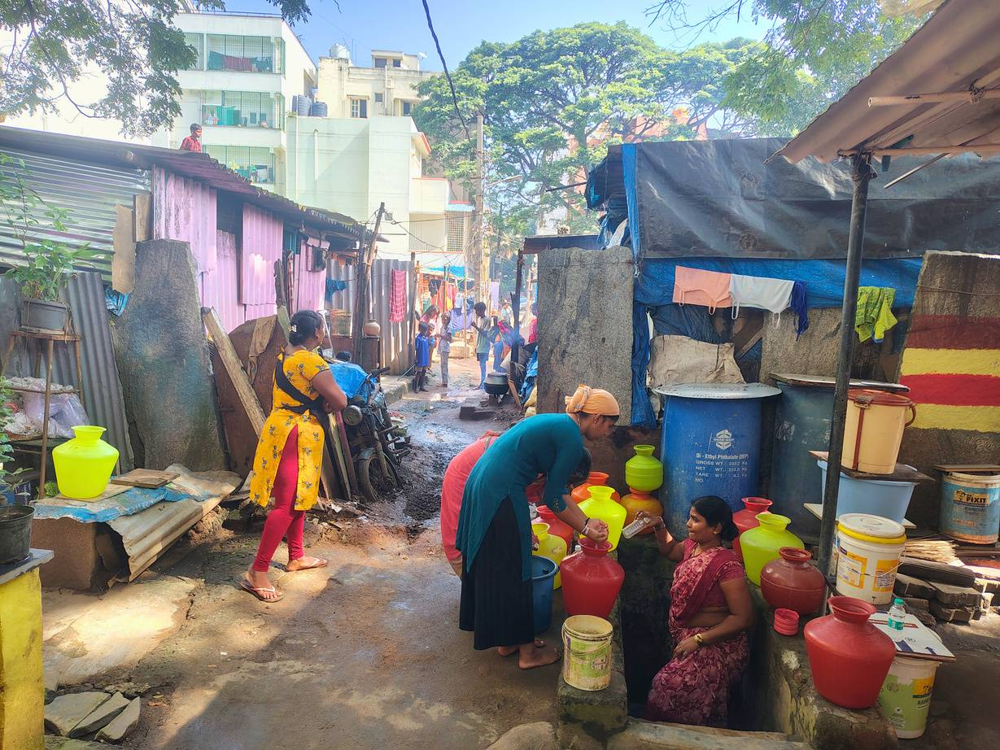

The starting point
For years, households were never told when BBMP collection vehicles would come, so they dumped waste at informal sites. The result was foul smells, insects, frequent illness and unsafe streets.
What youth leadership made possible
Youth-led surveys, awareness sessions, bins, follow-ups and black spot planting changed the colony. Regular collection resumed, black spots were cleaned and greened, and hygiene improved.
From recipient to supporter
Lakshmi took part in household surveys and awareness sessions, received and used segregation bins, and joined the clean-up and planting of black spots. What helped most was the mix of practical tools and continuous support from the young leaders.
She now helps with follow-ups, shares information with neighbours and looks after the plantation by the beautified site. Her story shows how youth-led action can restore dignity and strengthen accountability in services for low-income urban communities.
“Earlier, people had a habit of dumping waste on the road. Now our colony is clean, and we feel proud of our surroundings.”Lakshmi, resident, KSRTC Colony